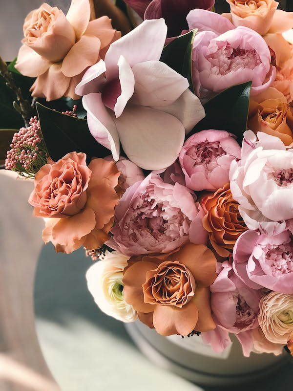

¿Quiénes somos?
En nuestra floristería, somos apasionados por la belleza natural de las flores y la magia que pueden agregar a la vida de las personas. Fundada con amor y dedicación, nuestra misión es brindar a nuestros clientes la más exquisita selección de flores frescas y arreglos florales artísticamente diseñados. Nos enorgullece ser una fuente confiable de alegría, emoción y expresión de sentimientos a través de nuestras creaciones florales. Nuestro equipo de floristas altamente capacitados y apasionados se esfuerza por superar las expectativas, transformando cada pedido en una experiencia única y memorable. En cada flor que entregamos, vemos la oportunidad de compartir amor, celebrar momentos especiales y consolar en tiempos de tristeza. En definitiva, somos más que una floristería; somos un puente emocional que conecta corazones a través de la belleza de las flores.

Nuestra historia
En el corazón de nuestra floristería, florece una historia de amor y pasión por la naturaleza que comenzó hace décadas. Álvaro, el fundador de nuestro pequeño paraíso floral, cultivó su primer jardín en el patio trasero de su casa cuando era solo un niño. Con cada semilla que plantaba y cada flor que cuidaba, su amor por la belleza natural florecía al compás de las estaciones.
Con el tiempo, Álvaro se dio cuenta de que las flores no eran solo hermosas, sino también poderosas. Podían sanar corazones rotos, iluminar los días más oscuros y expresar emociones de una manera que las palabras a menudo no podían. Este descubrimiento lo llevó a crear nuestra floristería, un rincón especial donde cada pétalo es una obra maestra y cada ramo cuenta una historia única.
Hoy, nuestra pasión por las flores y nuestro compromiso con la calidad y la creatividad continúan creciendo. Cada vez que entras en nuestra tienda o recibes uno de nuestros arreglos, estás experimentando un legado de amor y dedicación que se ha transmitido de generación en generación. En cada flor que elegimos, en cada diseño que creamos, vemos la oportunidad de tocar tu corazón y hacerte parte de nuestra hermosa historia. Gracias por ser parte de nuestro viaje y por permitirnos compartir la magia de las flores contigo.
Calidad
Aspectos clave que tenemos en cuenta:
1.Frescura:
Las flores deben estar frescas y vibrantes. Recibir suministros de flores regularmente y de mantenerlas en condiciones adecuadas, como agua limpia y temperaturas controladas, para prolongar su frescura.
2.Selección:
Ofrecer una amplia variedad de flores para satisfacer las preferencias de nuestros clientes.Desde las flores más comunes hasta variedades exóticas, una selección diversa es atractiva.
3.Salud:
Inspeccionamos cuidadosamente nuestras flores para asegurarnos que estan libres de plagas, enfermedades y daños.
4.Hidratación:
Mantenemos las flores bien hidratadas. Cambiamos el agua regularmente y cortamos los tallos en un ángulo para permitir una mejor absorción de agua.
5.Diseño:
Creamos arreglos florales artísticos y atractivos. La presentación y el diseño son lo importante.
6.Cuidado postventa:
Brindamos consejos a nuestros clientes sobre cómo cuidar sus flores en casa. Esto ayuda a prolongar la vida de las flores y garantizar la satisfacción de nuestros clientes.
7.Proveedor confiable:
Trabajamos con proveedores de flores confiables que ofrecen productos de alta calidad y entregas consistentes.
Trabaja con Nosotros
En Bouquet de Emociones, estamos buscando individuos apasionados y dedicados para unirse a nuestro equipo. Si amas las flores, tienes un ojo creativo y disfrutas brindando un servicio excepcional a los clientes, podrías ser la persona que estamos buscando.
Nuestra historia
En Bouquet de Emociones, creemos en la belleza de la naturaleza y su capacidad para tocar los corazones de las personas. Nuestra misión es compartir esa belleza y emoción a través de arreglos florales excepcionales. Cada día, trabajamos para crear experiencias memorables para nuestros clientes, ayudándoles a expresar sus sentimientos a través de las flores.
Nuestra Cultura
Valoramos la creatividad, la pasión y la atención al detalle. Creemos en el trabajo en equipo y en la colaboración para brindar los mejores resultados. En Bouquet de Emociones, fomentamos un ambiente de trabajo positivo y alentador donde cada miembro del equipo tiene la oportunidad de crecer y aprender.
Oportunidades de Empleo
- 1.Floristas Creativos:
- ¿Tienes un talento natural para crear hermosos arreglos florales? Estamos buscando floristas con experiencia para diseñar y confeccionar arreglos únicos.
- 2.Atención al Cliente:
- Si eres amable, servicial y te apasiona brindar un servicio excepcional, considera unirte a nuestro equipo de atención al cliente.
- 3.Entrega y Logística:
- Si te gusta la logística y eres puntual y confiable, puedes ser parte de nuestro equipo de entrega y logística.
- 4.Cómo Aplicar
- Si te sientes identificado con nuestra misión y cultura, y estás interesado en unirte a Bouquet de Emociones, envía tu currículum y una carta de presentación que destaque por qué serías un excelente candidato a bouquetdeemociones@gmail.com o llama al +34 900 90 90 90
Esperamos conocer a personas apasionadas por las flores y comprometidas con brindar experiencias memorables a nuestros clientes. ¡Únete a Bouquet de Emociones y ayúdanos a seguir compartiendo la belleza de las flores con el mundo!